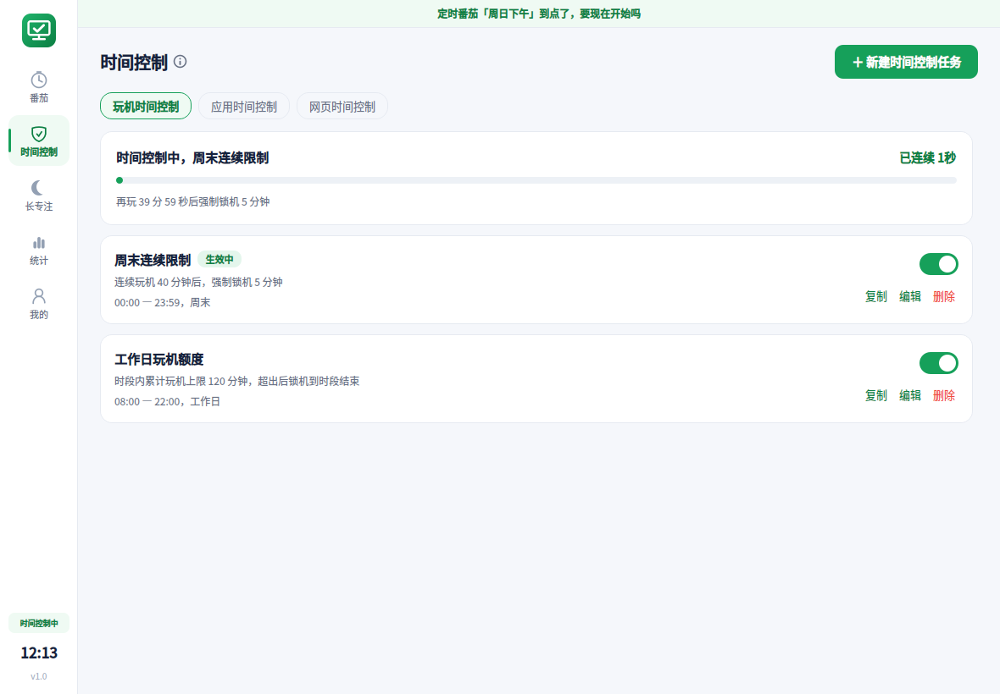
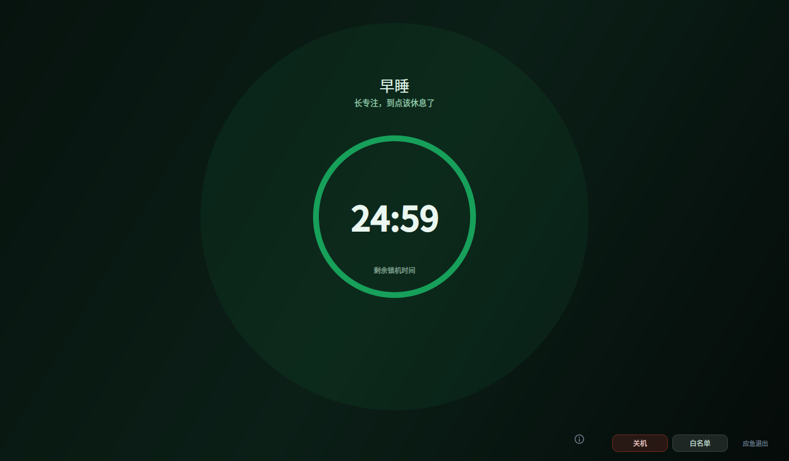
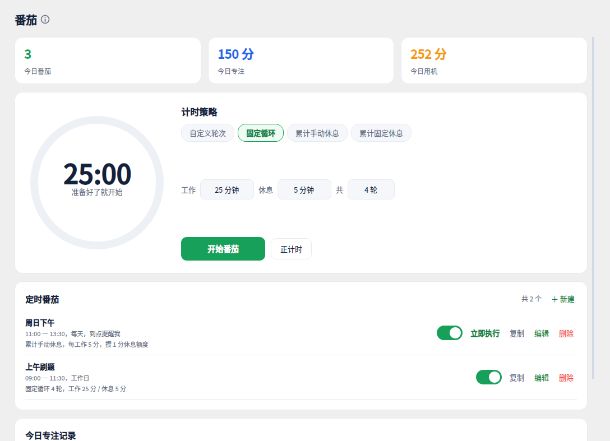
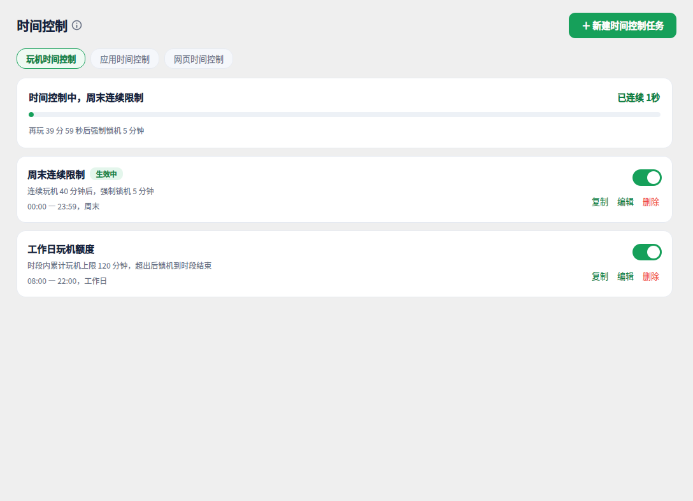
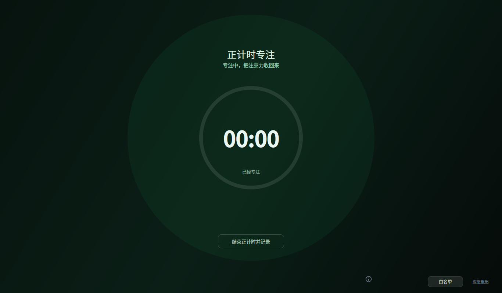
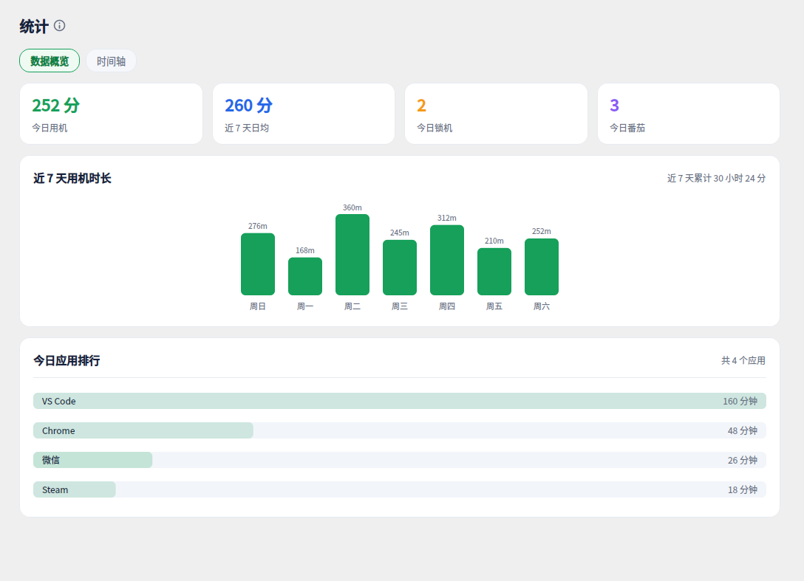

番茄专注、时间控制、长专注锁机
从管住每一次打开开始

锁机是帮自己守约，不是防破解。
应急退出快捷键一直可用，代价是扣积分。

工作与休息分开计时，攒下休息额度，到了点再走开。定时的番茄会提前提醒，开始之前还能反悔。

给玩机时长划一条线。连续玩到上限、打开某个程序、浏览某个网站，都可以单独设规则。超时后全屏锁机，白名单里的程序和网站不弹窗也不计时。

常驻小窗显示剩余时间，不用切回主界面也能知道还有多久。
睡眠计划到点自动锁机，正计时一直走到你主动关掉它。想继续用，得自己按那一下。

今日用机、近七天趋势、应用排行和时间轴，把用过的时间摊开来看，才知道该从哪里收回来。

Windows、Linux、macOS 都能用。到点提醒，到点锁屏，在哪台电脑上都是一样的节奏。
番茄专注、时间控制、长专注锁机
下一次打开电脑，就从这里开始